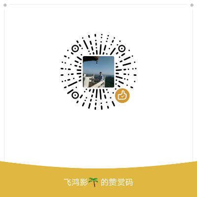

lua-book
Lua脚本学习
Lua 是一个小巧的脚本语言。
是巴西里约热内卢天主教大学（Pontifical Catholic University of Rio de Janeiro）里的一个研究小组，由Roberto Ierusalimschy、Waldemar Celes 和 Luiz Henrique de Figueiredo所组成并于1993年开发。其设计目的是为了嵌入应用程序中，从而为应用程序提供灵活的扩展和定制功能。
Lua 有一个同时进行的JIT项目，提供在特定平台上的即时编译功能。
Lua脚本可以很容易的被C/C++ 代码调用，也可以反过来调用C/C++的函数，这使得Lua在应用程序中可以被广泛应用。不仅仅作为扩展脚本，也可以作为普通的配置文件，代替XML,ini等文件格式，并且更容易理解和维护。
Lua由标准C编写而成，代码简洁优美，几乎在所有操作系统和平台上都可以编译，运行。一个完整的Lua解释器不过200k，在目前所有脚本引擎中，Lua的速度是最快的。这一切都决定了Lua是作为嵌入式脚本的最佳选择。
点击右上角的 Watch 订阅本书，点击 Star 收藏本书。
打赏作者
欢迎微信扫码打赏我，感谢支持！
